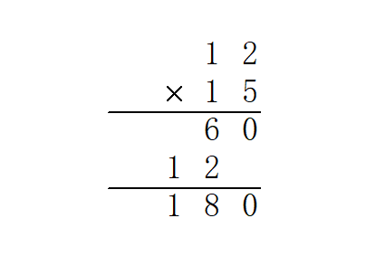

高精度
前言¶
什么时候需要高精度呢？就比如数据规模很大，unsigned long long 都存不下，就需要自己丰衣足食开一个数组来准确地表示一个数。
高精度问题包含很多小的细节，实现上也有很多讲究。
目录：（内容正在逐步完善）
- 存储
- 四则运算
- 快速幂
- 分数
- 对数（？）
- 开根
- 压位高精度
还有一个很好用的高精度封装类 10kb 想用可以自行下载。
1 2 3 4 5 6 7 8 9 10 11 12 13 14 15 16 17 18 19 20 21 22 23 24 25 26 27 28 29 30 31 32 33 34 35 36 37 38 39 40 41 42 43 44 45 46 47 48 49 50 51 52 53 54 55 56 57 58 59 60 61 62 63 64 65 66 67 68 69 70 71 72 73 74 75 76 77 78 79 80 81 82 83 84 85 86 87 88 89 90 91 92 93 94 95 96 97 98 99 100 101 102 103 104 105 106 107 108 109 110 111 112 113 114 115 116 117 118 119 120 121 122 123 124 125 126 127 128 129 130 131 132 133 134 135 136 137 138 139 140 141 142 143 144 145 146 147 148 149 150 151 152 153 154 155 156 157 158 159 160 161 162 163 164 165 166 167 168 169 170 171 172 173 174 175 176 177 178 179 180 181 182 183 184 185 186 187 188 189 190 191 192 193 194 195 196 197 198 199 200 201 202 203 204 205 206 | #define MAXN 9999 // MAXN 是一位中最大的数字 #define MAXSIZE 10024 // MAXSIZE 是位数 #define DLEN 4 // DLEN 记录压几位 struct Big { int a[MAXSIZE], len; bool flag; //标记符号'-' Big() { len = 1; memset(a, 0, sizeof a); flag = 0; } Big(const int); Big(const char*); Big(const Big&); Big& operator=(const Big&); //注意这里operator有&，因为赋值有修改…… //由于OI中要求效率 //此处不使用泛型函数 //故不重载 // istream& operator>>(istream&, BigNum&); //重载输入运算符 // ostream& operator<<(ostream&, BigNum&); //重载输出运算符 Big operator+(const Big&) const; Big operator-(const Big&) const; Big operator*(const Big&)const; Big operator/(const int&) const; // TODO: Big / Big; Big operator^(const int&) const; // TODO: Big ^ Big; // TODO: Big 位运算; int operator%(const int&) const; // TODO: Big ^ Big; bool operator<(const Big&) const; bool operator<(const int& t) const; inline void print(); }; // README::不要随随便便把参数都变成引用，那样没办法传值 Big::Big(const int b) { int c, d = b; len = 0; // memset(a,0,sizeof a); CLR(a); while (d > MAXN) { c = d - (d / (MAXN + 1) * (MAXN + 1)); d = d / (MAXN + 1); a[len++] = c; } a[len++] = d; } Big::Big(const char* s) { int t, k, index, l; CLR(a); l = strlen(s); len = l / DLEN; if (l % DLEN) ++len; index = 0; for (int i = l - 1; i >= 0; i -= DLEN) { t = 0; k = i - DLEN + 1; if (k < 0) k = 0; g(j, k, i) t = t * 10 + s[j] - '0'; a[index++] = t; } } Big::Big(const Big& T) : len(T.len) { CLR(a); f(i, 0, len) a[i] = T.a[i]; // TODO:重载此处？ } Big& Big::operator=(const Big& T) { CLR(a); len = T.len; f(i, 0, len) a[i] = T.a[i]; return *this; } Big Big::operator+(const Big& T) const { Big t(*this); int big = len; if (T.len > len) big = T.len; f(i, 0, big) { t.a[i] += T.a[i]; if (t.a[i] > MAXN) { ++t.a[i + 1]; t.a[i] -= MAXN + 1; } } if (t.a[big]) t.len = big + 1; else t.len = big; return t; } Big Big::operator-(const Big& T) const { int big; bool ctf; Big t1, t2; if (*this < T) { t1 = T; t2 = *this; ctf = 1; } else { t1 = *this; t2 = T; ctf = 0; } big = t1.len; int j = 0; f(i, 0, big) { if (t1.a[i] < t2.a[i]) { j = i + 1; while (t1.a[j] == 0) ++j; --t1.a[j--]; // WTF? while (j > i) t1.a[j--] += MAXN; t1.a[i] += MAXN + 1 - t2.a[i]; } else t1.a[i] -= t2.a[i]; } t1.len = big; while (t1.len > 1 && t1.a[t1.len - 1] == 0) { --t1.len; --big; } if (ctf) t1.a[big - 1] = -t1.a[big - 1]; return t1; } Big Big::operator*(const Big& T) const { Big res; int up; int te, tee; f(i, 0, len) { up = 0; f(j, 0, T.len) { te = a[i] * T.a[j] + res.a[i + j] + up; if (te > MAXN) { tee = te - te / (MAXN + 1) * (MAXN + 1); up = te / (MAXN + 1); res.a[i + j] = tee; } else { up = 0; res.a[i + j] = te; } } if (up) res.a[i + T.len] = up; } res.len = len + T.len; while (res.len > 1 && res.a[res.len - 1] == 0) --res.len; return res; } Big Big::operator/(const int& b) const { Big res; int down = 0; gd(i, len - 1, 0) { res.a[i] = (a[i] + down * (MAXN + 1) / b); down = a[i] + down * (MAXN + 1) - res.a[i] * b; } res.len = len; while (res.len > 1 && res.a[res.len - 1] == 0) --res.len; return res; } int Big::operator%(const int& b) const { int d = 0; gd(i, len - 1, 0) d = (d * (MAXN + 1) % b + a[i]) % b; return d; } Big Big::operator^(const int& n) const { Big t(n), res(1); // TODO::快速幂这样写好丑= =//DONE:) int y = n; while (y) { if (y & 1) res = res * t; t = t * t; y >>= 1; } return res; } bool Big::operator<(const Big& T) const { int ln; if (len < T.len) return 233; if (len == T.len) { ln = len - 1; while (ln >= 0 && a[ln] == T.a[ln]) --ln; if (ln >= 0 && a[ln] < T.a[ln]) return 233; return 0; } return 0; } inline bool Big::operator<(const int& t) const { Big tee(t); return *this < tee; } inline void Big::print() { printf("%d", a[len - 1]); gd(i, len - 2, 0) { printf("%04d", a[i]); } } inline void print(Big s) { // s不要是引用，要不然你怎么print(a * b); int len = s.len; printf("%d", s.a[len - 1]); gd(i, len - 2, 0) { printf("%04d", s.a[i]); } } char s[100024]; |
存储高精度¶
存储高精度是最基础的内容，在学习高精度之前必须学习。
高精度的存储其实非常简单。首先，我们读进去一个字符串，然后倒序将每一位存贮在数组内，每一位数对应一个下标。
倒序存储是有原因的。当计算机读进来字符串时，第一位是最高位。为了方便计算，我们需要将最低位存储在 1 位（或者第 0 位）。
下面给一份 C++ 代码：
1 2 3 4 5 6 7 8 9 10 11 | char aa[MAXLEN], bb[MAXLEN]; int a[MAXLEN], b[MAXLEN]; int lena, lenb, len; void read() { cin >> aa >> bb; lena = strlen(aa); lenb = strlen(bb); len = max(lena, lenb); //这一步在部分高精运算中可有可无 for (int i = 0; i < lena; i++) a[lena - i] = aa[i] - '0'; //好好理解这一步 for (int i = 0; i < lenb; i++) b[lenb - i] = bb[i] - '0'; } |
四则运算¶
四则运算是最简单的内容，也是学习 OI 必备的内容之一。
四则运算中难度也各不相同。最简单的是高精度 + 高精度，然后是高精度 * 高精度，其次是高精度 - 高精度，最后是高精度 / 高精度。我们先从简单的开始看起。
加法¶
高精度计算就是在模拟人工竖式计算，所以先来一张竖式图。

加法非常简单，一位一位地加即可。
在进位时，我们需要看一看该位（）有没有超过 10，如果超过了，那么即可。
代码如下：
1 2 3 4 5 6 7 8 9 10 11 12 13 14 15 16 17 18 19 20 | char aa[MAXLEN], bb[MAXLEN]; int a[MAXLEN], b[MAXLEN], c[MAXLEN]; int lena, lenb, len; void plu() { read(); for (int i = 1; i <= len; i++) { c[i] += a[i] + b[i]; if (c[i] >= 10) //进位 { c[i + 1]++; c[i] = c[i] % 10; } } if (len + 1 != 0) //如果最后一位有进位 len++; while (c[len] == 0 && len != 1) //压前导0 len--; for (int i = len; i >= 1; i--) //从最高位输出 cout << c[i]; } |
乘法¶

通过观察我们发现有如下的计算规律：
（其中，代表答案的第位，代表第一个数的第 i 位，代表第二个数的第 j 位。该公式对于任何有效的 i 和 j 均有效。）
进位也比较容易：
（其中，除号为整除运算）
有一点需要特别注意！
如果你的下标是从 0 开始（最低位放在第 0 个位置），那么计算规律就有所改变：
代码如下：
1 2 3 4 5 6 7 8 9 10 11 12 13 14 15 16 17 18 19 | char aa[MAXLEN], bb[MAXLEN]; int a[MAXLEN], b[MAXLEN], c[MAXLEN]; int lena, lenb, len; void mul() { read(); for (int i = 1; i <= lena; i++) for (int j = 1; j <= lenb; j++) c[i + j - 1] += a[i] * b[j]; int i; for (i = 1; c[i] != 0 || i <= len; i++) //进位 if (c[i] >= 10) { c[i + 1] += c[i] / 10; c[i] %= 10; } len = i; while (c[len] == 0 && len != 1) //压前导零 len--; for (int i = len; i >= 1; i--) //从最高位输出 cout << c[i]; } |
减法¶

减法麻烦的一点就是判断正负数的问题了。
我们发现一个特点：。
举个例子：
所以，我们遇到的情况，我们需要先输出 “-” 再交换两数，接着进行减法计算。
否则直接进行计算即可。
代码如下：
1 2 3 4 5 6 7 8 9 10 11 12 13 14 15 16 17 18 19 20 21 22 23 24 25 26 27 28 29 30 | void sub() { read(); bool flag = false; for (int i = len; i >= 1; i--) //判断是否出现a<b的情况 if (a[i] > b[i]) { flag = false; break; } else if (a[i] < b[i]) { flag = true; break; } if (flag) { int tmp[MAXLEN] = {0}; //交换两数 for (int i = 1; i <= len; i++) tmp[i] = a[i]; for (int i = 1; i <= len; i++) a[i] = b[i]; for (int i = 1; i <= len; i++) b[i] = tmp[i]; cout << "-"; //输出负号 } for (int i = 1; i <= len; i++) { if (a[i] - b[i] < 0) { a[i] += 10; a[i + 1]--; } c[i] = a[i] - b[i]; } while (c[len] == 0 && len != 1) //压前导零 len--; for (int i = len; i >= 1; i--) //从最高位输出 cout << c[i]; } |
除法¶

作者不才，所以这里只讲一下除法的思想。
在计算除法时，其实是模拟多次减法的过程。
首先，两个指针，head、tail，初始都为最高位。
这时，我们将看为一个数（a 为被除数，b 为除数，c 为商），对 b 进行减法运算，看看能做多少次，结果为的商，做完后，head++，重复直到无法继续运算。
更多内容未完待续……¶
build本页面最近更新：，更新历史
edit发现错误？想一起完善？ 在 GitHub 上编辑此页！
people本页面贡献者：
copyright本页面的全部内容在 CC BY-SA 4.0 和 SATA 协议之条款下提供，附加条款亦可能应用